Socióloga · Comunicación · Dirección Creativa
Especialista en Cultura & Convergencia DigitalSociologist · Communications · Creative Direction
Culture & Digital Convergence Specialist
Más de 10 años liderando estrategias de contenido, coberturas y relación con medios para shows y festivales internacionales de gran escala. Coordinación de equipos de prensa, desarrollo de estrategias de comunicación y formatos editoriales para audiencias digitales. 10+ years leading content strategy, media coverage and press relations for large-scale international shows and festivals. Coordination of press teams, development of communication strategies and editorial formats for digital audiences.
Ver sitio de SAKE ↗Visit SAKE website ↗
wearesake.com/EN
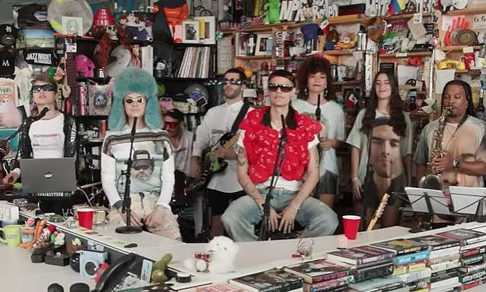
CA7RIEL & Paco Amoroso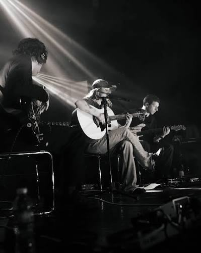
Lara 91k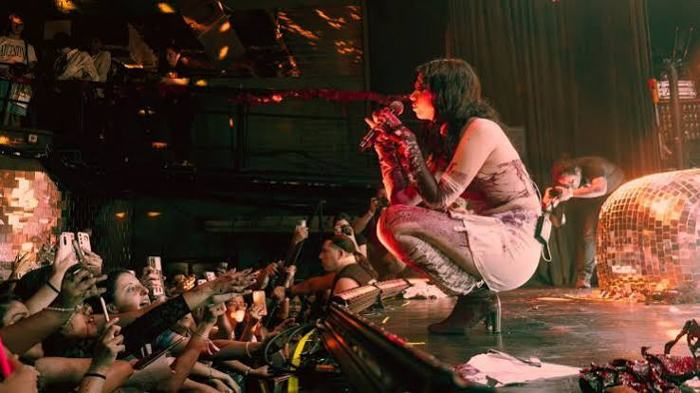
Blair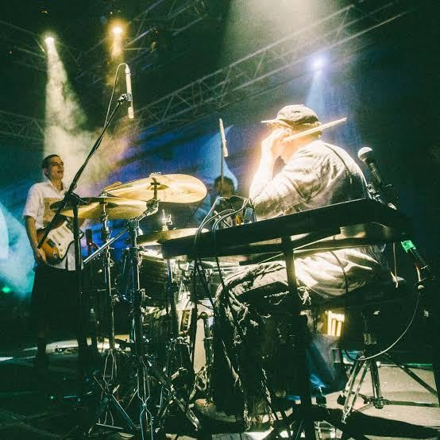
Usted Señalemelo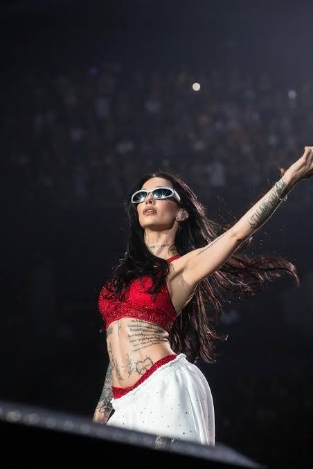
La Joaqui · Movistar Arena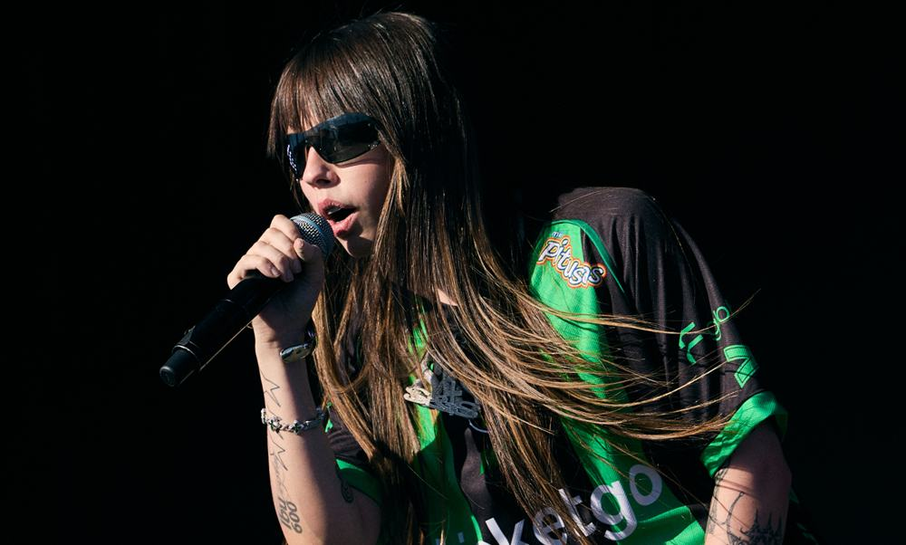
Sara Malacara · Lollapalooza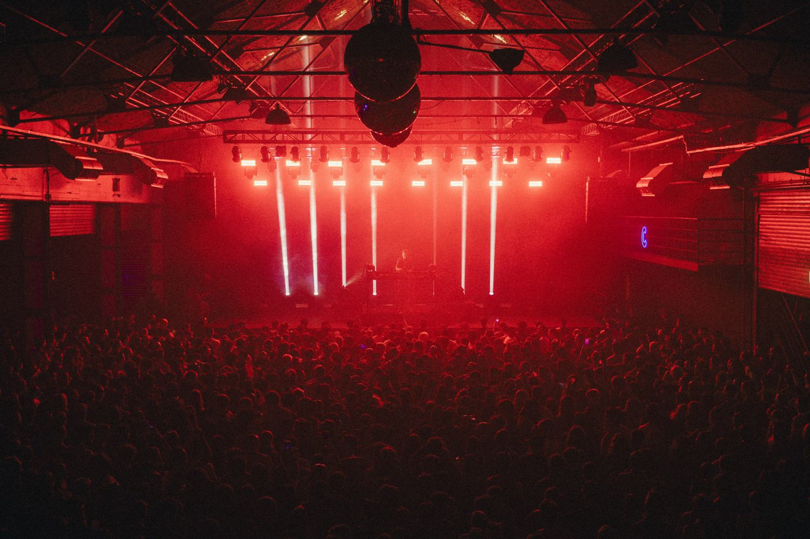
Disclosure · Art Media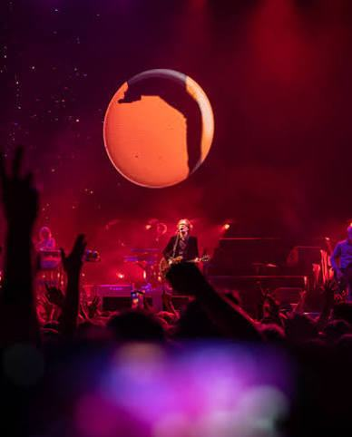
PULP · Movistar Arena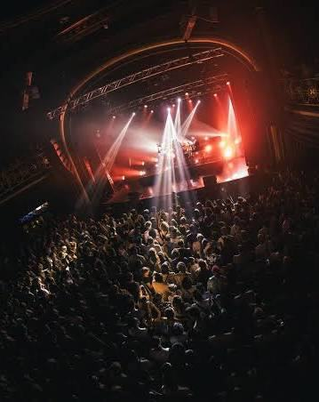
FKJ · Vórterix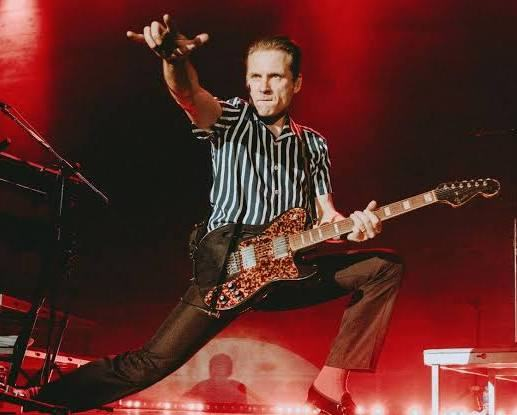
Franz Ferdinand · Obras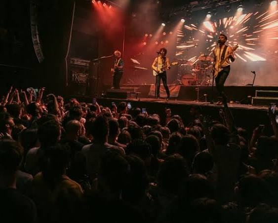
The Kooks · Groove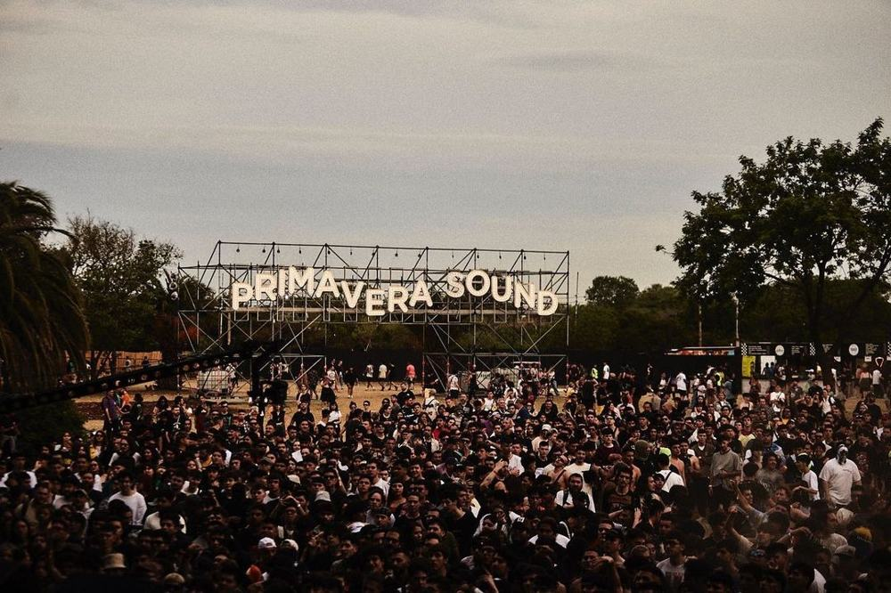
Primavera Sound Barcelona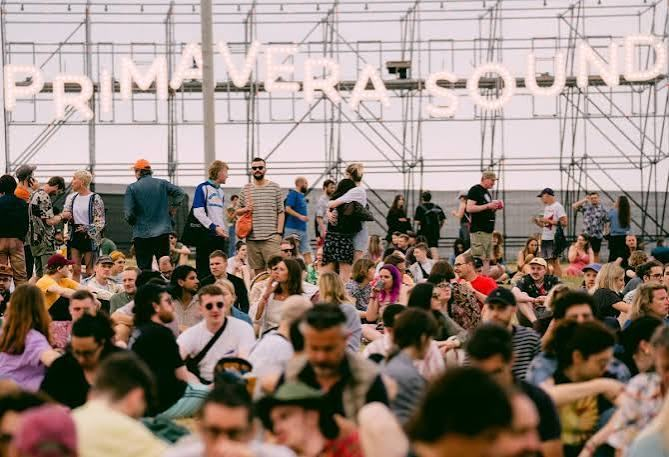
Primavera Sound Buenos Aires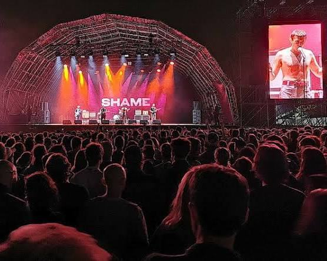
Wide Awake London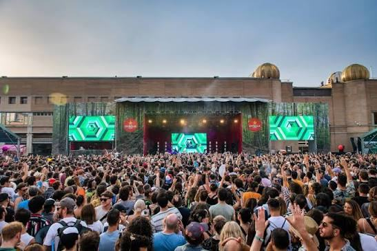
Sónar Barcelona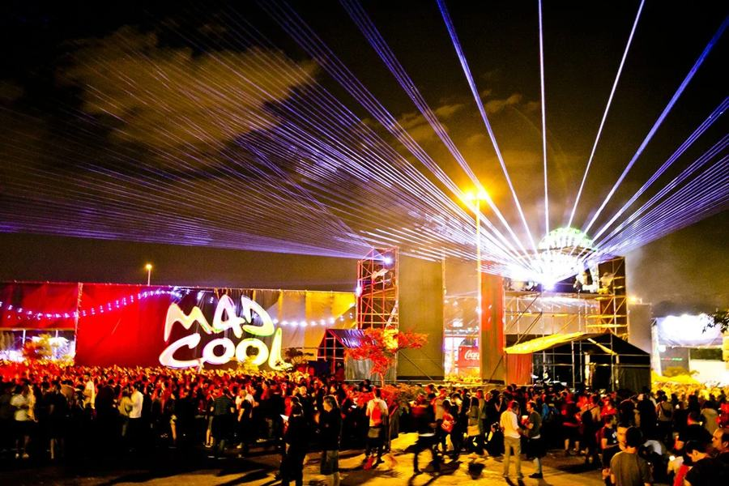
Mad Cool Madrid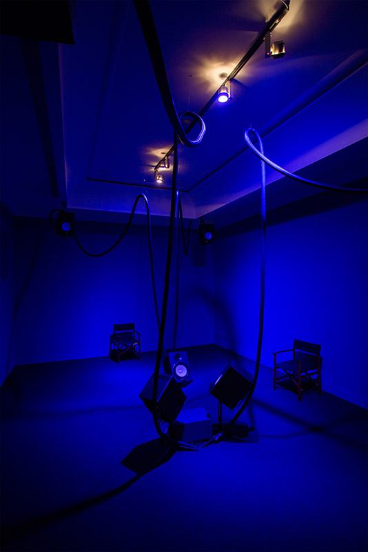
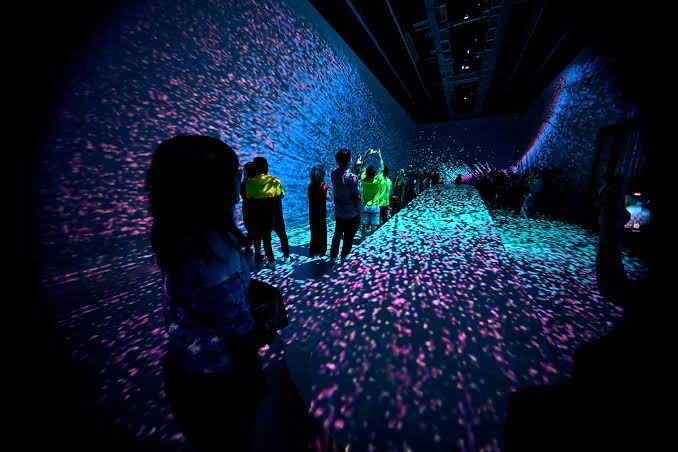
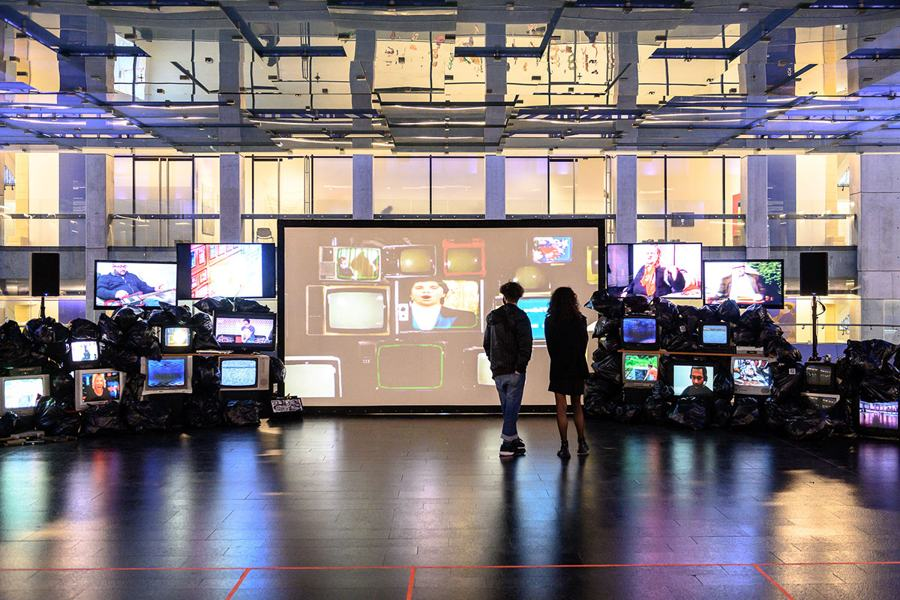
Desarrollo y dirección de un proyecto de comunicación cultural especializado en música e industrias culturales, con foco en investigación, análisis sociológico y narrativas audiovisuales.Development and direction of a cultural communication project specialized in music and cultural industries, focused on research, sociological analysis and audiovisual narratives.
SociologíaSociology
Universidad de Buenos Aires · 2014 – 2019
Industrias Culturales y Convergencia DigitalCultural Industries & Digital Convergence
UNTREF · 2020 – presentepresent
Artes VisualesVisual Arts
Universidad Nacional de las Artes · 2015 – presentepresent